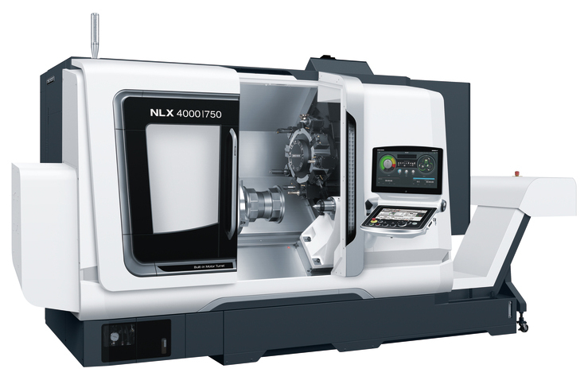
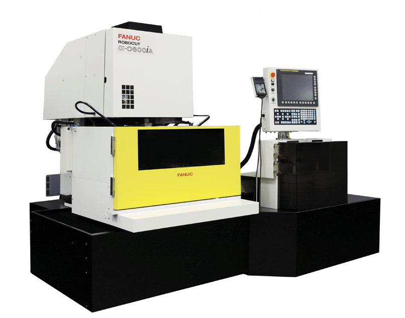
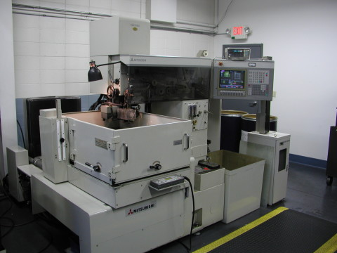

Machine floor
Custom Manufacturing
A broad precision manufacturing floor with 5-axis machining, boring mills, vertical milling, turning, high-speed machining, EDM, grinding, assembly, and inspection.

Machine capabilities
The machine floor behind the custom manufacturing work.
The shop pairs machining, EDM, grinding, turning, inspection, and assembly support so custom manufacturing work can stay coordinated from setup through final review.
5-Axis Machine
This 5-axis machining center has a swivel table for 5-axis simultaneous machining, high workpiece weight limits, a large tool magazine, and an 18,000 rpm spindle.

Boring Mills
Zeman's boring mills support projects from high-speed material removal to precision component machining. They are equipped with full B-axis rotary tables and offer precision 3D machining capabilities.

Vertical Milling
Zeman's milling and machining processes support full 2D and 3D applications for billet parts, prototypes, castings, and weldments.

Turning Services
Advanced turning services support a wide range of projects, from small components to large, complex parts, with equipment and skilled machinists focused on precision and quality.

High-Speed Machining
High-speed capability includes 3D functionality, linear liquid-cooled drives, 42,000 rpm spindles, balanced shrink-fit holders, laser presetters, and online cameras for remote monitoring.

Wire EDM
Multiple electrical discharge machining platforms can wire cut precise and accurate compound angles on a variety of materials.

Grinding Machines
Premium grinding equipment supports high tolerance, surface finishing, and flatness requirements, including jig, surface, and cylindrical grinding.

Cylindrical Grinding Machines
Cylindrical grinding capability supports individual workpieces, small batches, and high-volume production.
What it covers
Purpose-built around geometry, material, tolerance, and production use.
The machine floor supports one-off tooling, precision details, fixtures, machined parts, and production-support work across industries.
- 5-axis machining and boring mills
- Vertical milling and turning
- High-speed machining up to 42,000 RPM
- EDM, surface grinding, and cylindrical grinding
- Assembly, testing, and inspection support
Wide process range
The machine floor supports one-off tooling, precision details, fixtures, machined parts, and production-support work across industries.
Built around project reality
The right process path depends on geometry, material, timing, tolerance, quantity, and how the work will be used.
Experienced manufacturing partner
Zeman brings engineering, machining, assembly, and quality functions close enough together to move work clearly.

Start the conversation
Send the files, specs, timing, and must-haves.
The RFQ form stays static-site friendly and posts through the existing Formspree endpoint.